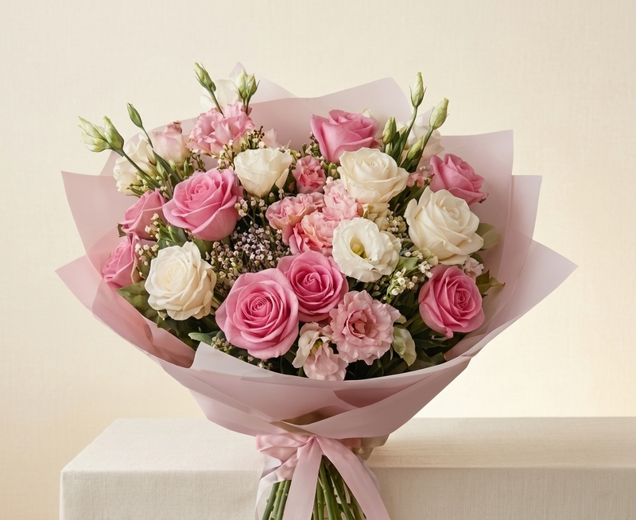
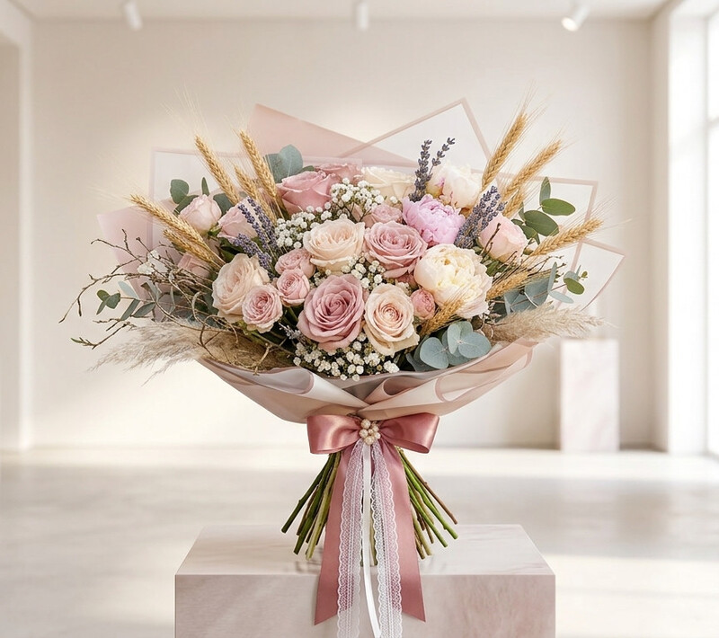
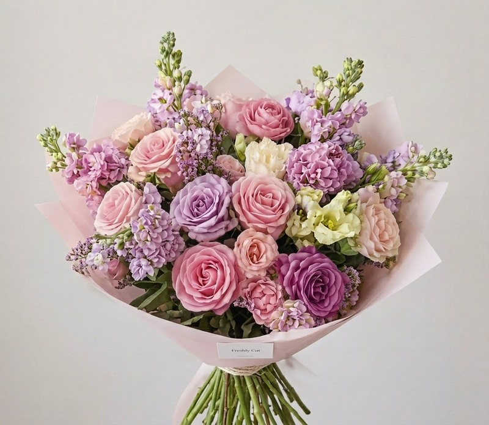
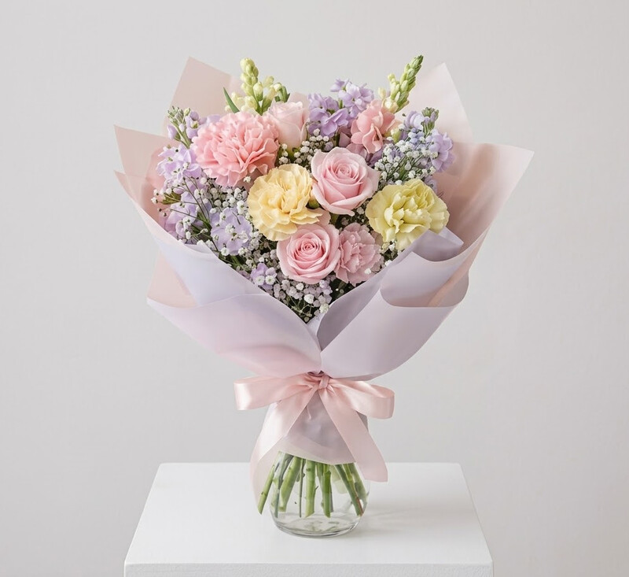

Buquê Aurora
R$ 89,90
Ver detalhesFlores para os pequenos grandes momentos
Buquês delicados para transformar momentos simples em lembranças especiais.
Encontrar meu buquê
Pequenos gestos, grandes sentimentos. Encontre o buquê perfeito para cada ocasião.

R$ 89,90
Ver detalhes
R$ 119,90
Ver detalhes
R$ 59,90
Ver detalhes